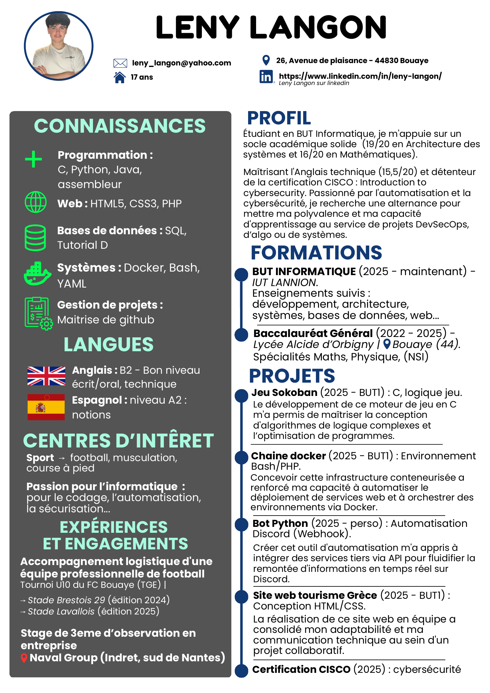

CV Interactif
Cliquez sur une section du CV pour voir les détails apparaître à droite.

Leny Langon
Bonjour, je suis Leny Langon. J'ai 17 ans et je suis actuellement étudiant en BUT Informatique.
Originaire de Bouaye dans le sud de Nantes, je vis également à Lannion dans le nord de la Bretagne dans le cadre de mes études.
Passionné par le développement, l'automatisation et les systèmes, j'aime concevoir des solutions techniques et relever de nouveaux défis.
Voici mon LinkedIn si vous souhaitez échanger : linkedin.com/in/leny-langon
Email : leny_langon@yahoo.com
Mon LinkedInProfil & Objectifs
Étudiant en BUT Informatique, je m'appuie sur un socle académique solide (19/20 en Architecture des systèmes et 16/20 en Mathématiques). Maîtrisant l'Anglais technique (15,5/20) et détenteur de la certification CISCO : Introduction to cybersecurity.
Passionné par l'automatisation et la cybersécurité, je mets ma polyvalence et ma capacité d'apprentissage au service de projets DevSecOps, d’algo ou de systèmes.
Formation détaillée
BUT Informatique (Depuis 2025)
Actuellement étudiant à l'IUT de Lannion, je suis un cursus intensif et professionnalisant. J'y consolide mes compétences fondamentales en développement logiciel, architecture des systèmes, cybersécurité et bases de données.
Baccalauréat Général (2022 - 2025)
J'ai suivi mes études secondaires au Lycée Alcide d’Orbigny à Bouaye avec un profil très scientifique. Mes spécialités en Mathématiques, Physique-Chimie et NSI (Numérique et Sciences Informatiques) m'ont inculqué une solide rigueur analytique et algorithmique.
Ce parcours complet, de l'algorithmie théorique du lycée jusqu'à la pratique concrète du BUT, m'a appris à être autonome et à concevoir des solutions fiables.
Voir mon parcours completExpériences & Engagements
Bénévole "Ambassadeur" - FC Bouaye
Bénévole durant deux années consécutives (éditions 2024 et 2025) lors du Tournoi U10 (TGE) organisé par le FC Bouaye. Intégré à une équipe "d'ambassadeurs" et rattaché à un responsable, j'avais pour mission de guider des équipes professionnelles (Stade Brestois 29, Stade Lavallois). Mon rôle couvrait la logistique complète des équipes : accompagnement dans la ville et au restaurant, communication sur les horaires et les événements à venir, gestion des imprévus et orientation (accès à l'infirmerie, vestiaires, etc.).
Stage d'observation (3ème) - Naval Group
J'ai effectué un stage d'observation d'une semaine au sein du site industriel de Naval Group à Indret (au sud de Nantes). Cette immersion m'a offert une précieuse première découverte du monde de l'entreprise et de l'ingénierie de pointe.
Projets Majeurs
Jeu Sokoban (C, logique et optimisation)
J'ai conçu et développé de A à Z un moteur de jeu Sokoban en langage C. Ce projet m'a permis d'implémenter des algorithmes de logique complexes, de gérer la mémoire et de structurer une application interactive avec une forte exigence de performance.
Infrastructure Docker (Bash / PHP)
J'ai mis en place une chaîne complète de conteneurisation. Ce projet a consisté à concevoir et orchestrer des environnements de services web via Docker, tout en automatisant les tâches de déploiement à l'aide de scripts Bash robustes.
Bot Python et API (Webhook Discord)
Afin de répondre à un besoin d'automatisation, j'ai développé un bot en Python s'appuyant sur les webhooks Discord. Ce projet m'a initié à l'intégration de services tiers via API pour fluidifier la remontée d'informations en temps réel.
Certification CISCO : Introduction to Cybersecurity
Afin de consolider mes bases en sécurité des systèmes d'information, j'ai suivi et obtenu la certification officielle CISCO "Introduction to Cybersecurity". Cette formation m'a sensibilisé aux enjeux de protection des réseaux et des données. Voir mon badge et mon certificat.
Voir tous les projetsCompétences & Connaissances
Langages de programmation
Je maîtrise divers langages allant du bas niveau (C, Assembleur) pour l'optimisation et la compréhension de la mémoire, jusqu'aux langages orientés objet et de scripts (Java, Python) pour le développement d'applications logicielles et l'automatisation.
Développement Web & Bases de données
Je suis capable de concevoir des interfaces web dynamiques à l'aide de HTML5, CSS3 et PHP. En parallèle, je modélise et administre des bases de données relationnelles grâce à une solide maîtrise de SQL et de Tutorial D.
DevOps, Systèmes & Outils
Familier avec les environnements Linux, j'utilise Bash et YAML pour concevoir des scripts système. Je conteneurise mes environnements avec Docker et je versionne rigoureusement mon code avec Git et GitHub pour sécuriser mes projets.
Détail de mes compétencesLangues
Anglais
J'ai un très bon niveau écrit et oral (B2), notamment sur l'anglais technique indispensable en informatique. Pour preuve de cet investissement, j'ai été major de ma promotion en anglais lors du premier semestre de mon BUT1 Informatique.
Espagnol
Je possède des notions de base solides (A2), ayant suivi un enseignement continu de l'espagnol en deuxième langue, de la classe de 5ème au collège jusqu'en Terminale.
Centres d'intérêt
Passion sportive
Très actif depuis mon enfance, j'ai pratiqué de nombreuses disciplines variées : rugby, tennis, triathlon, ski, escalade, tir à l'arc ou encore la voile. Ces dernières années, j'ai fait le choix de me concentrer sur des pratiques exigeant constance et régularité, à savoir le football, la musculation et la course à pied.
Veille et passion informatique
L'informatique est bien plus qu'un domaine d'étude pour moi, c'est une véritable passion. Sur mon temps libre, j'aime coder des projets personnels, explorer des outils d'automatisation et me documenter sur la cybersécurité. J'éprouve une réelle satisfaction à concevoir des systèmes de A à Z et à comprendre en profondeur les technologies que j'utilise au quotidien.